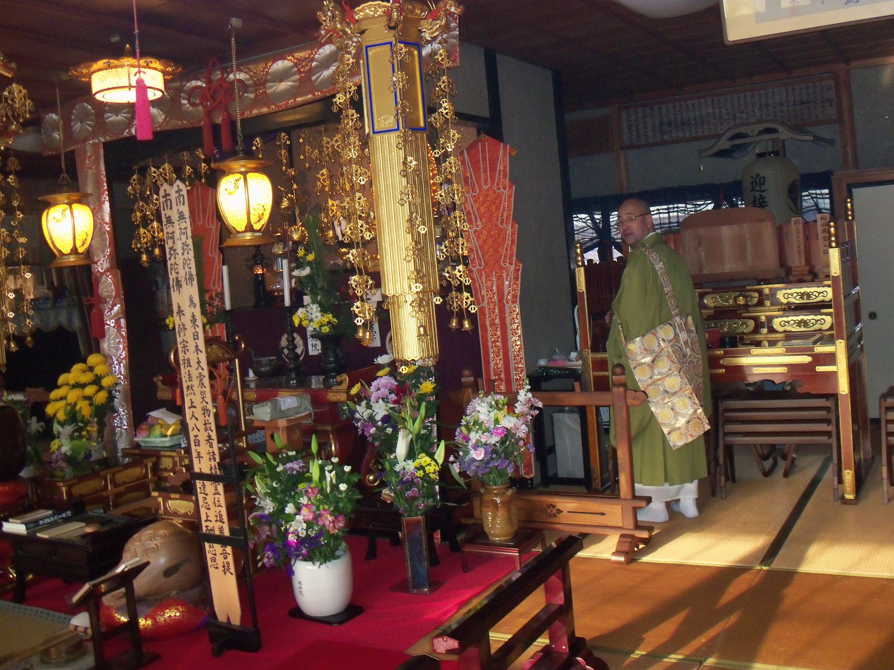

There are three primary religions in Japan: Buddhism, Shintoism, and Confucianism. Among these three, Buddhism is a religion while Confucianism is widly considered a way of thought. Many consider Shintoism to be a mix between a religion and a worldview. Buddhism is the most widespread in North America.
Just as Christianity stemmed from Jesus Christ but had many different sects break off from it with reformers and restorers, the same thing happened with Buddhism. The various sects' differences were magnified as they spread across Asia.
Jodo Shinshu is one of the most common branches of (Japanese) Buddhism in America. The Jodo Shinshu headquarters are located in Kyoto, Japan. They have temples all around the world and one in SLC. According to the SLC temple's website, they meet most Sundays at 10AM.
Rev. Jerry Hirano at jhirano@slbuddhist.org
Salt Lake Buddhist Temple 211 West 100 South Salt Lake City, UT 84101